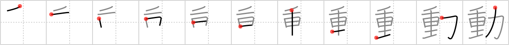

動
← →
move

Reading:
On-Yomi: ドウ — Kun-Yomi: うご.く、うご.かす
Heisig story:
Heavy . . . muscle.
Koohii stories:
1) [Copycatken] 4-7-2006(132): Even though the furniture is heavy, it'll be easy to move with all the muscles that he has.
2) [kumakuma] 6-7-2008(91): His MUSCLES are so HEAVY, he barely can move…thats ironic.
3) [CaLeDee] 20-9-2008(50): Heavy things can be moved with a bit of muscle.
4) [francajun] 30-3-2012(16): To move something heavy, you need muscles.
5) [sskaggs] 15-11-2012(12): Everyone knows that (Force x Mass= acceleration), and as is typical when converting western expressions to eastern expressions this kanji gives us the same equation in reverse order and pictorialized: (Heavy x Muscle = Move). ;-p easy peasy.